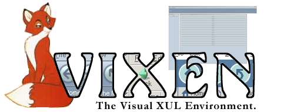

Introduction
Vixen is designed to be a Visual XUL IDE similar to Visual Basic, Delphi, Macromedia Dreamweaver and Glade, but for the XPToolkit technology developed by the Mozilla project. The initial goal of Vixen is to allow developers to quickly develop professional quality dialogs and windows without having to write any (or at least much) XUL or CSS by hand. The long term goal is to create a comprehensive development environment for rapid development of XUL applications.
What We Have Now
Are a lot of ideas, and little actual material. We have a directory in the Mozilla.org source tree, under extensions/vixen, which contains the little code that currently exists. We welcome ideas and discussion on the netscape.public.mozilla.xpfe newsgroup.
What We Need to Build
Is a framework upon which to build the IDE. As a proof of concept, we're starting with a basic form editor (called the Visual Form Designer, VFD for short) and a few info windows. Information about these basic requirements are stored and should be updated frequently on our requirements page.
Components:
More to Come
This is merely an initial statement of intent ;) Expect more details in the future.
Ben Goodger